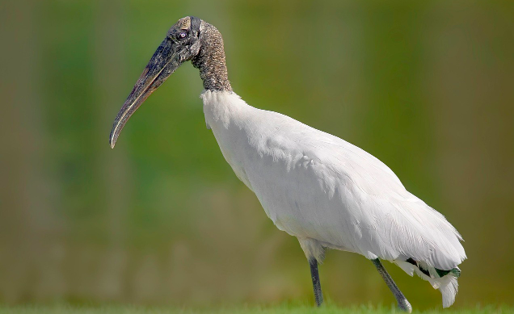

Lifespan: 20 years in the wild, up to 27 years in captivity
Weight: 4-6 lbs for females, 5.5-7 lbs for males
Diet: Primarily fish, also snails, mollusks, frogs, and aquatic invertebrates
Predators: Occasionally bobcats or alligators, young are eaten by raccoons
Range: South eastern United states, Central America (including Cuba), and South America
Conservation Status: Least concern
Fun Fact: Wood storks are the only species of stork native to the United States.
Fun Fact: Wood storks hunt by feeling for fish with their open beaks. When they feel a fish, they can snap their beaks shut in 25 milliseconds.